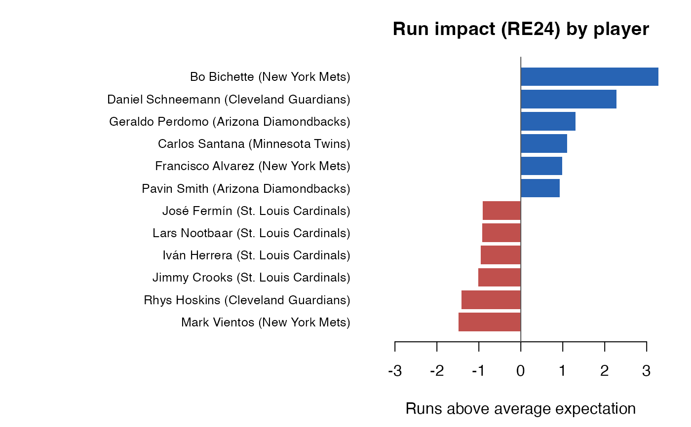

Draw a horizontal bar chart of summed RE24 for each player, using the
output of calculate_run_impact(). Positive bars are runs added above the
average expectation; negative bars are runs taken away.
Arguments
- impact
Data frame returned by
calculate_run_impact(), with characterplayerand numericre24. Ateamcolumn, if present, is used to keep players on different teams apart.- top
Positive whole number of players to show, chosen by largest absolute total.
Infshows everyone.- main
Character plot title.
Value
Invisibly, a data frame with player, optional team, events
and re24 for the plotted players, sorted from highest to lowest.
Details
Uses base R graphics, so the plot can be saved with any graphics
device such as grDevices::png(). Totals depend on the expectancy matrix
and on how many events each player had; they are not rates.
Examples
impact <- calculate_run_impact(reviewed_base_out, run_expectancy_fangraphs)
plot_run_impact(impact, top = 12)
